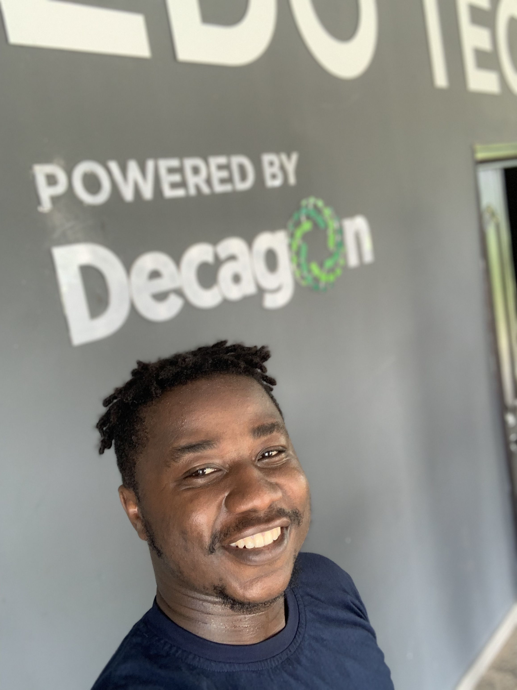

DotNet Developer
Ogidan Emmanuel BamideleWith years of experience in back-end and systems architecture design. I am confident I will be an excellent fit for Organization next line on Software Engineer. My experience has provided me with the innovative and technical skills necessary to successfully provide your company with multifaceted technical solutions across a wide range of software platforms. At Decagon I am part of the back-end developers that develops API’s. I was instrumental in structuring several internal systems comprising order entry/ management tools, conversion/ revenue reporting as well as REST API’s built in .NET. I also successfully collaborate on solutions with out product, Quality Assurance and Marketing teams to offer the best user experience to build higher customer lifetime value. I am also undergoing AWS/DevOps training, which will give me knowledge to provide solutions in database technology, advance programming, operating systems, which I want to contribute to your organization. It would be a pleasure to learn more about Organization needs, and I would welcome the chance to provide further insight into my knowledge of technical abilities, personal attributes and track record of success in building revenue Applications compatible across multiple platforms, browser and devices.
